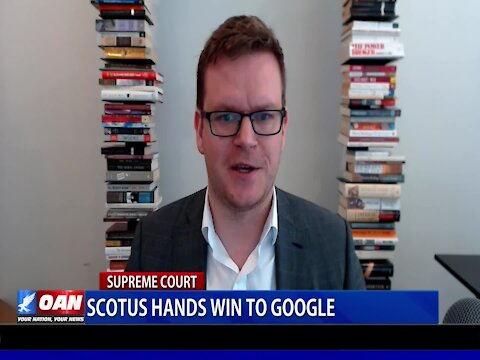

SCOTUS hands win to Google in case v.Oracle
Difficult to decide which branch is most corrupt now All three suck.
Posted On: 2021-04-13T00:00:00
Posted By: Jimbo
Plan B is always fire.Reset button time.
Posted On: 2021-04-13T13:46:00
Posted By: Dindoo Nuffin
It think the SCOTUS members were out of their depth, they don't understand how modern IT works.Google STOLE 11K lines of code!Code that was OWNED by Oracle.Pretty simple theft case IMHO.
Posted On: 2021-04-13T00:00:00
Posted By: Ole Da Hammer
Not exactly.The original intellectual property owner was actually Sun Microsystems which Oracle bought (along with all their IP).Prior to that purchase, Google developed Android under Sun's open-source license agreement.Sun was perfectly ok with what Google was doing (from a legal stand point).It wasn't until Oracle bought Sun that the lawsuits started flying.Personally, I believe Oracle bought Sun for the express purpose of suing Google.
Posted On: 2021-04-13T11:53:00
Posted By: Cliffy
good points Oracle also owns MYSQL - gooogle uses MariaDB which is a branch from MYSQL.Both technologies allow both corps to do what they do Things to consider
Posted On: 2021-04-13T12:30:00
Posted By: Bush Brigade
SCOTUS sat by and watched an American government purchased, let them rot.
Posted On: 2021-04-13T13:27:00
Posted By: We The People
So basically, Sundar Pichai stuffed more benjamin$$$$ into the paper bag then Larry Ellison.SCOTUS are all traitors
Posted On: 2021-04-13T00:00:00
Posted By: EastStreet
So then, if the SCOTUS can hand this win to Google does that mean it can hand the presidential 'win' to Trump after finally receiving proof of the crooked election that put Biden into the White House?
Posted On: 2021-04-13T13:19:00
Posted By: desadiste
Google and Facejunk are a huge part of the deep state destruction of America.They can do no wrong and aren't going anywhere.
Posted On: 2021-04-13T10:27:00
Posted By: Marshall
They think they can do no wrong.It'll circle back on 'em...
Posted On: 2021-04-13T13:52:00
Posted By: wabbitsan
The googs own more politicians and judges.
Posted On: 2021-04-13T09:39:00
Posted By: Troy Dynes
There is no SCOTUS...it’s now called SCOCCP.
Posted On: 2021-04-13T13:13:00
Posted By: honee
Not surprised.Our current government is bought and paid for by big corporations and it is these corporations that are the new face of tyranny.
Posted On: 2021-04-13T11:23:00
Posted By: Eightysix
Big corporations like the CCP.
Posted On: 2021-04-13T13:20:00
Posted By: desadiste
Google and Oracle are both big corporations.
Posted On: 2021-04-13T13:25:00
Posted By: Bud
Yes, but only one has a huge stake in the current administration.
Posted On: 2021-04-13T20:52:00
Posted By: Eightysix
Just think, the Supreme Court getting another case wrong.
Posted On: 2021-04-13T13:24:00
Posted By: Bud
SCOTUS made the right decision.
In 1995, Sun Microsystems created Java language and all its APIs.
In 2007, Google created Android operating system using Java language.
In 2010, Oracle bought Sun Microsystems and thus became the owner of Java language all its APIs.
Then Oracle sued Google for using Java its APIs in the Android operating system.
In conclusion, Oracle acted like a shark/predator for buying Sun Microsystems Java for the sole purpose of suing Google, and thus it is owed nothing.
Posted On: 2021-04-13T10:44:00
Posted By: cyber_hound
I disagree.Google could have bought Sun Microsystems and avoided the whole issue, but they didn't.You would have thought that their corporate copyright lawyers would have told them they were open for litigation.Honestly Oracle made a smart business move, it's shark eat shark out there.
Posted On: 2021-04-13T11:44:00
Posted By: Gary Schaefer
Yeah, but whether Google could have bought Sun, doesn't change the underlying issue that Google developed Android under Sun's open-source license which Sun knew about at the time.Oracle is trying to change the game after the fact.
Posted On: 2021-04-13T14:03:00
Posted By: Cliffy
If memory serves, Google created Android under Sun Microsystem's open-source license which Sun knew about, and was ok with Google doing, the CEO of Sun, after leaving when Oracle bought them out, said that Java has always been free to use and that although Sun didn't necessarily like the way Android used Java, it had no intention of stopping it.So this case basically comes down to Google, operating in good faith with the owner of the intellectual property, develops software under the open-source license.Oracle then buys out the owner of that intellectual property and basically says, 'You know that previous agreement you had with Sun?Yeah, deal's off'.Oracle was 100% being predatory with this (I think they bought Sun for the express purpose of suing Google).The Supreme Court got this right.
Posted On: 2021-04-13T11:43:00
Posted By: Cliffy
Despite what Levin et al.say, SCOTUS was never intended to be 'independent,' any more than the President or the Congress were.I welcome anything that weakens SCOTUS, including court packing.
I would have preferred stripping it of most of its appellate jurisdiction, of course.It has been legislating for about 100 years already.
We'll know the Republicans are serious when Turtle loses his leadership position.
Posted On: 2021-04-13T16:49:00
Posted By: Jason Lamson
I actually agree with SCOTUS on this one.Had they ruled in Oracle's favor, they would have opened the door to a fresh batch of lawsuits for every company that built or simply used an interface between any two programs.
Oracle has struggled mightily to try and monetize Java since they bought Sun Microsystems (the inventor of Java).Fact of the matter is, if Sun found a way to get more revenue out of Java, they would be too big for Oracle to buy.In the beginning, Sun distributed Java as open source, which was one of the reasons why it was widely adopted.Google (and most other companies) would never would have used it if they were going to pay a license fee for every device on which Java was running.You can't have it both ways -- dominant market share at a retail price of $0 OR negligible market share as a traditionally licensed product.Sun chose the former and Oracle knew this when they bought Sun.
In other news, Amazon released their own version of Java called Corretto, free for anyone to use.No Oracle license required.
Posted On: 2021-04-13T15:59:00
Posted By: ironhacker
I miss life before cell phones and computers, my life was my own and it was a lot cheaper !
Posted On: 2021-04-13T14:06:00
Posted By: Lana
Aimless Conehead Barrister did a handstand on her bench trying to imitate a tulip.Roberts looked at child porn, the fat latina checked her cholesteral and Clarence Thomas wondered how much time he would serve if he just murdered all those hack communists to save America.
Posted On: 2021-04-13T13:45:00
Posted By: Dindoo Nuffin
Big Tech are ALL slugs.~ ~ ~ Pass the salt, please.
Posted On: 2021-04-13T13:25:00
Posted By: desadiste
A decade ,damn, talk about slow
Posted On: 2021-04-13T11:22:00
Posted By: gar

Content Date: 2021-04-13
Download Date: 2021-04-16
Document ID: L0C049YER